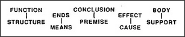
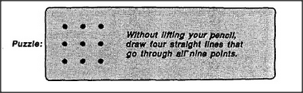

How do we connect the things we have with the goals we want to achieve? The answer: We have many ways! Each use or purpose may suggest some corresponding way to split things up — and in each such view there will seem to be some most essential parts. These are the ones that, in such a view, appear to serve the goal directly; the rest will seem like secondary parts that only support the role of the main parts. We do this not only in the physical realm, but in many other realms as well.
Each of these dumbbell distinctions has its own style for distinguishing essential parts from supportive parts. And even in the world of physical things, we can apply these different mental views in different ways. For example, there are many ways to describe the act of standing on a table in order to be able to reach higher.
| Support: | Tables hold things away from the floor. |
| Function: | Tables are for supporting things. |
| Conclusion: | If you put something on a table, its height increases. |
| Cause-Effect: | I can reach higher because I start higher. |
| Means-Ends: | If I want to reach higher, I can stand on a table. |
Even when we simply put something on a table, we're likely to employ several such descriptions at the same time — perhaps in different sections of the mind. The quality of our understanding depends upon how well we move between those different realms. In order to translate easily from one of them to another, we must discover systematic cross-realm correspondences. However, finding these is rare. Usually, the situation is like that we found for chairs and games: each description-element in one world corresponds to a hard-to- describe accumulation of structures in the other world. What is remarkable about the body-support concept is how often it leads to systematic cross-realm correspondences. For example, we can use it to translate supported by, in the architectural realm, into horizontal surface underneath in the geometrical realm. To be sure, this correspondence fails to represent the possibility of supporting an object by suspending it from above. But some exceptions are inevitable.
Our systematic cross-realm translations are the roots of fruitful metaphors; they enable us to understand things we've never seen before. When something seems entirely new in one of our description-worlds, it may turn out that when translated to some other world it resembles something we already know.
Now, before you turn to the following page, try to solve this puzzle.
